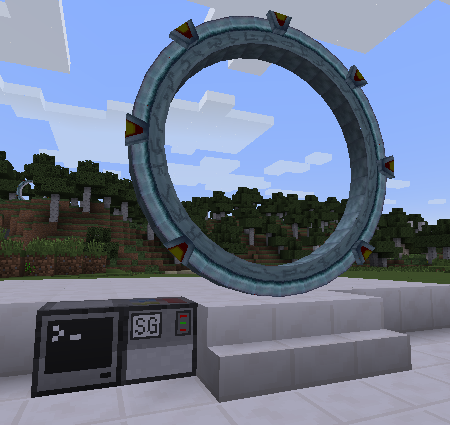
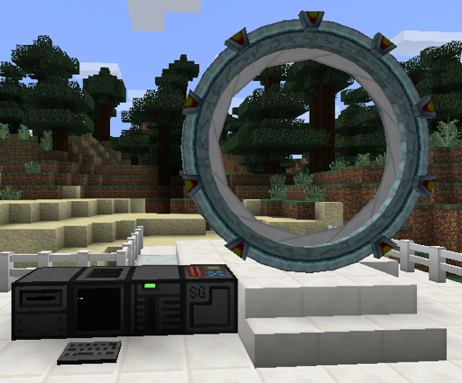

|  ComputerCraft interface block
placement example
|
|
 Open Computers interface block
placement example
|
| ComputerCraft |
Open Computers |
| Use peripheral.wrap() with the
appropriate side or peripheral ID, e.g. sg = peripheral.wrap("right") sg = peripheral.wrap("stargate_1") |
If there is only one stargate connected to the computer, you can access it as the primary component of type "stargate": component = require("component") sg = component.getPrimary("stargate") Otherwise you will need to access it by its address, which you can find by using an Analyzer on the interface block, e.g. sg = component.proxy("6f2a9642-2ab3-482f-930f-812fadafb48e") |
| Idle |
Operating and ready to dial |
| Dialling |
In the process of dialling
an address |
| Opening |
Finished dialling, wormhole
in transient phase |
| Connected |
Wormhole is stable |
| Closing |
Wormhole is shutting down |
| Offline |
Interface not connected to a functioning stargate |
| Outgoing | Connection was dialled from this end |
| Incoming | Connection was dialled from the other end |
| Empty string |
Not connected |
| IndustrialCraft |
1 SU = 20 EU |
| Thermal Expansion |
1 SU = 80 RF |
| Event |
Description |
| sgDialIn, source, remote address |
An incoming connection has been
initiated |
| sgDialOut, source, remote address |
An outgoing connection has been
initiated |
| sgChevronEngaged, source, chevron number, symbol |
A
chevron has been engaged during dialling |
| sgStargateStateChange, source, new state, old state |
State of
stargate has changed |
| sgIrisStateChange, source, new state, old state |
State of
iris has changed |
| sgMessageReceived, source, arg, ... |
A message was sent from the connected stargate using the sendMessage method |
| Programs | Library Code | ||
| Common |
ComputerCraft |
Open Computers | |
| dial disconnect energy events interactive iris state |
addresses |
config compat |
config compat |
| ComputerCraft: | |
ccexamples.zip |
| Open Computers: | ocexamples.zip |